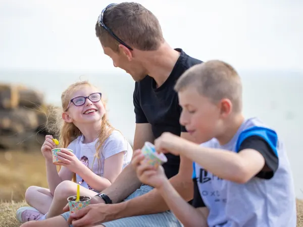

Your Hub for Everything Fostering
Think Fostering was created to make the fostering journey simpler. Whether you're just starting to think about fostering or you're ready to take the next step, we're here to guide you in the right direction.
We connect potential foster carers with trusted, registered fostering agencies across the UK, all in one place.
Search by Location
Find agencies near you with our postcode search
Verified Agencies
Every agency listed is Ofsted registered and vetted
Free Resources
Guides, FAQs, and articles to help you on your journey


 Must be 21+, have UK residency/work rights, and ability to care for a child
Must be 21+, have UK residency/work rights, and ability to care for a child